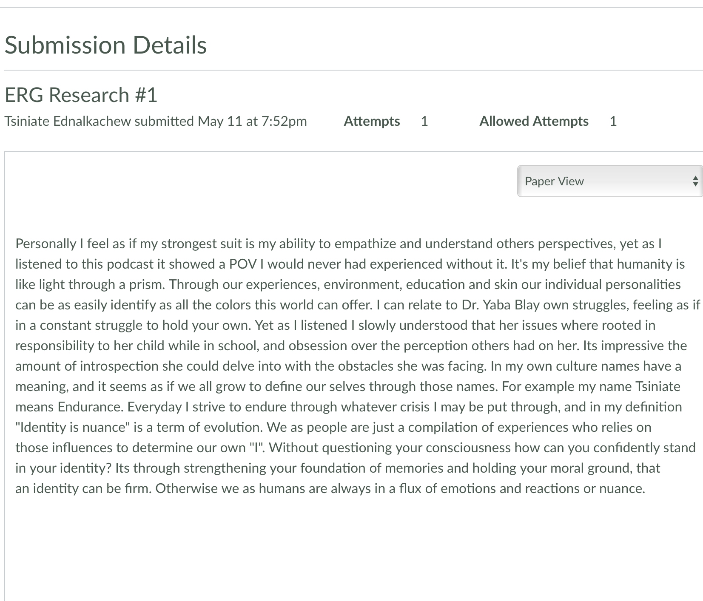
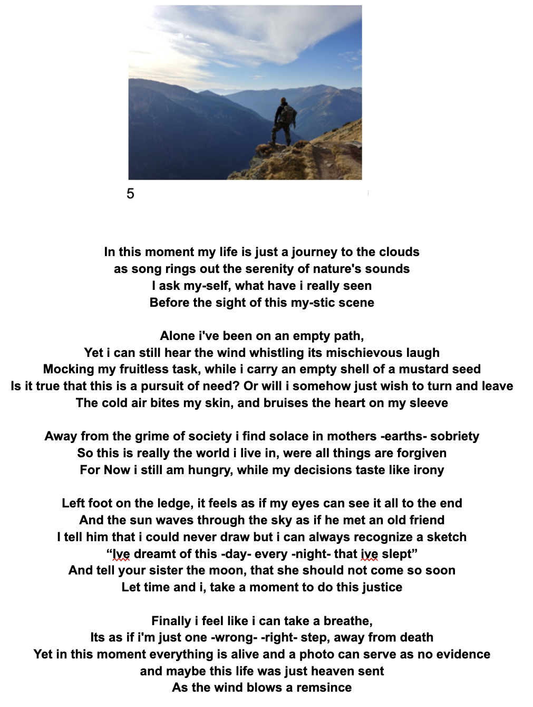
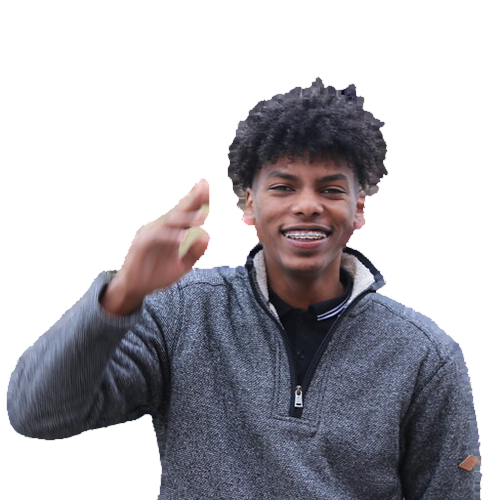

I chose this work sample because its an integral piece of my ideology, and means more to me than a simple written assignment. In our ERG Research we where required to analyze a paper on racial bias, and the models created to disadvantage minorities. Being a victim of hate crimes, I resonated with the message, but had to rely on a clear mind and literacy to express my feelings on the topic. Without using those skills I had built up, it would've been more challenging to explain my position. So many people have gone through life unable to speak up on how evil racism is. Being able to make a stand is the reason why we all live in privilege now. This influenced my goals to target and tear down racial barriers throughout my career.

Identity is Nuance
Perspective and dedication are two skills that have become more necessary throughout my life and work here at RoadtoHire. The reason why I chose this ERG research is because of the lessons I learned completing it. Leaning on my own introspection, and Dr. Blay's testimony, it made me realize that we are only as strong as the foundation we stand on. It was challenging asking myself what "Identity is Nuance" meant, but I came to the conclusion that we are all spinning on our own axis. Living bright like stars, we go out into our own space and gravitate towards certain situations. Yet without balance and equilibrium in your own mortality, you can collapse in on yourself. It has influenced me to work on strengthening my own Identity, and how to react to the flux of lifeasad.

Creative CREATIONS
I chose this poem because it was one of the more creative works I’ve done in PD. The assignment asked us to describe a picture in any form of story, and I decided to use my lyrical skills to portray a metaphorical journey through nature.
It was challenging because this was right after an incident that made me question life itself. I pushed myself to come up with ways to use this assignment to work through my own feelings and introspection. This influenced me to become more in tune with my creative side and realize that there is a myriad of ways to describe a perspective.
TESTIMONIALS
I chose my second RoadTalk because of how I challenged myself with the topic I spoke on. During my first speech, I didn’t pace myself properly and sped through many of the points I made. When going about it again, I decided to speak on a situation where I was almost killed, and how it impacted me. In reality, that experience brought me to a sunken place, and in order to talk about it, I had to keep a calm composure. I used my skills in storytelling and pacing to grab the attention of my audience while using body language to portray an image. It was still challenging to keep my emotions in check and tone professional when describing how I felt. However, that was the exact reason why I chose to speak on it. The speech influenced me to become more open with my struggles and to realize that speaking about trauma is the only way to let it go.

Reflection
My journey across this program has taught me the value of questions. Every day I had to lean on my inspiration for curiosity, that yearning to learn more. Without that driven mentality, there was simply no way I would've been able to keep up with such a fast-paced environment. My greatest strength is also my Achilles' heel, which is my introspection. Not only did I question broken code day in and out, I wondered about my capabilities of being here. With all the unfortunate circumstances piling up on top of me, I had to find the answers within myself. Regardless, I've been able to carve a path among my peers with my empathetic nature, collaboration and feedback. My biggest area of opportunity would be in logical thinking, or the flow of thought a coder should have. Too many times I have caught myself stuck in "loops" you can say, which I'm forced to navigate out of. I plan on implementing new study methods in order to fully digest learned material. While now I know I am capable, it's necessary for me to create a game plan for success and education.